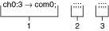
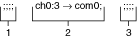
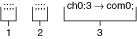

提交有关此主题的反馈。
提交有关此主题的反馈。 访问ni.com/support以获得技术支持。
访问ni.com/support以获得技术支持。使用以下过程在使用 NI-SWITCH 的扫描操作中填充开关的扫描列表。以下示例扫描三个开关的四个连续通道。有关基本扫描列表语法，请参阅扫描列表。
在开关#1的扫描列表中，输入要扫描的通道，后跟分号“;”的个数 等于其他扫描列表中通道的总和加一。出于本示例的目的，通道条目后的分号总数为 9。扫描列表如下所示：ch0:3->com0;;;;;;;;;;
下图说明了开关 #1 的扫描列表。

在开关#2 的扫描列表中，输入与第一个扫描列表中的通道相等的分号数，然后在开关#2 中输入要扫描的通道，以及与剩余通道总和相等的分号数扫描列表加一。对于本示例，通道条目之前的分号数量为四个，通道条目之后的分号数量为五个。扫描列表如下所示：;;;;ch0:3->com0;;;;;
下图说明了开关#2 的扫描列表。

在开关#3 的扫描列表中，输入等于所有先前扫描列表中通道总和的分号数，然后输入要扫描的通道，后跟一个分号。就本示例而言，通道条目之前的分号数为 8。扫描列表如下所示：;;;;;;;;ch0:3->com0;
下图说明了开关#3 的扫描列表。

提交有关此主题的反馈。 访问ni.com/support以获得技术支持。